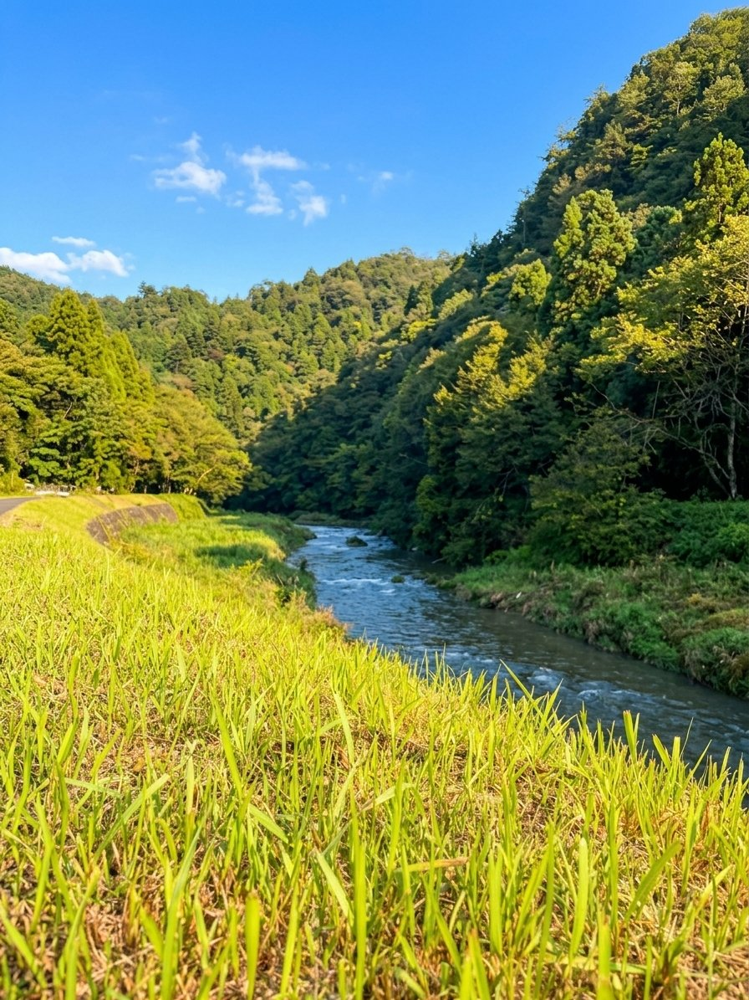
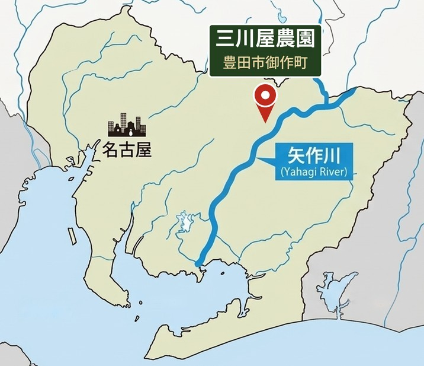
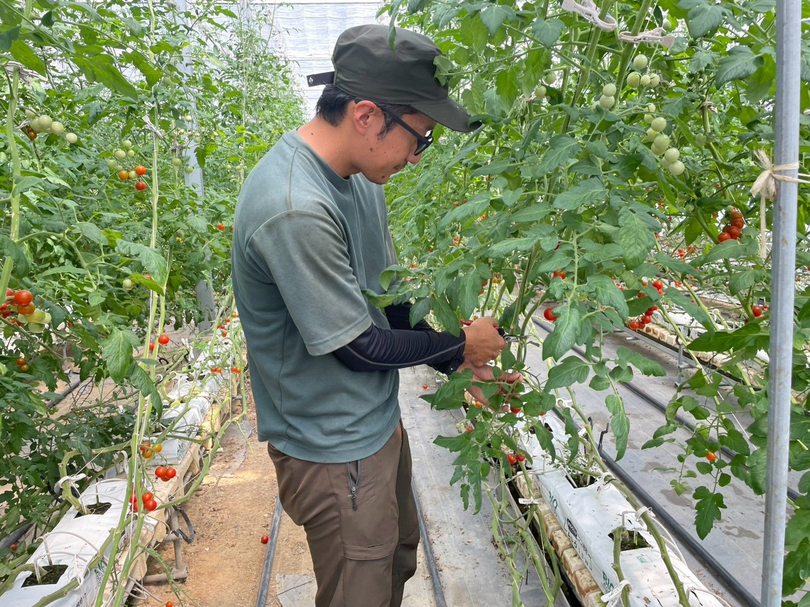
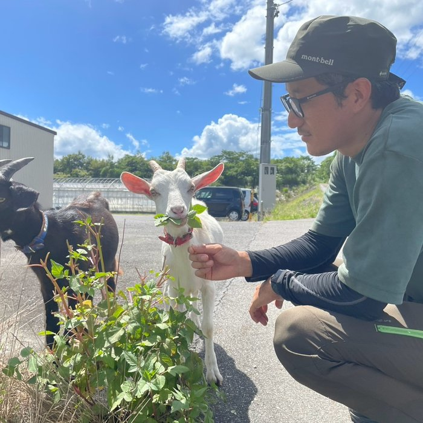

About Us
三川屋農園について


豊かな山と清らかな水が、
うま味の土台をつくる
農園がある豊田市御作町は、矢作川水系の緑豊かな山あい。森に囲まれ、きれいな空気と水に恵まれた里山です。山々を抜けて流れるミネラル豊富な水と、豊かな自然に囲まれた環境が、甘み・酸味・うま味がぎゅっと詰まった味わいの土台になっています。
自然豊かな山あい
ミネラル豊富な水
濃厚なうま味

オンラインショップ
農園からの直接お届けは、公式オンラインショップ（BASE）が一番お得でおすすめです。
公式ショップ限定特典！
- 採れたてをその日に産地直送
- ここでしか買えない限定セット
- 定期便のご予約も可能
※公式オンラインショップは現在準備中です。
産直通販サイト「食べチョク」でもお取り扱いが
ございます。
朝採れ直送
収穫当日に発送。みずみずしさが圧倒的に違います。
柔軟なロット対応
店舗規模に合わせ、納品頻度や量をご相談いただけます。


Recruit
自然の中で、
自然の中で、
一緒に美味しいを届けませんか？
三川屋農園では、トマトやナスの収穫・管理をお手伝いいただけるスタッフを募集しています。農業が初めての方も大歓迎。自然と動物に囲まれた環境で、一緒に働きませんか？
社割あり
週2日〜 短時間OK
除草担当の可愛いヤギちゃんもいます
Company
会社概要・アクセス
| 会社名 | 三川屋農園株式会社 |
|---|---|
| 代表者 | 代表取締役 武田 雄斗 |
| 生産者 | 取締役 加藤 大貴 |
| 事業内容 | ミニトマトの生産・出荷 |
| 主な品種 | 小鈴 |
| 所在地 | 愛知県豊田市御作町西川1209 |
| 資本金 | 600万円 |
| 主な卸先 | 小売スーパー様 産直店舗 7か所（豊田市・岡崎市） |
お問い合わせ
商品や、お取引に関するご質問など、
お気軽にお問い合わせください。